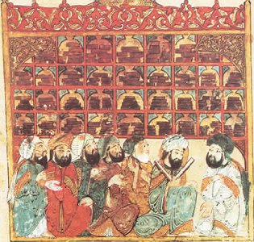

Sacred Texts Islam
Buy this Book at Amazon.com
|
 |
History of Philosophy in Islamby T. J. De Boer[1903] |
Islam in the first four centuries, ... was inclined to take into its possession not only the outward advantages of the world, but also the intellectual acquisitions of Mankind. (p. 71).
This is a well-written and authoritative review of the history of Islamic philosophy during the middle ages. Medieval Islamic civilization at its height was a center of learning, and its philosophers were no exception. Islamic philosophers grappled with issues such as free-will, causality and the nature of reality. Some of these figures are still well-known, such as Ibn Sina (Avicenna), Ibn Roshd (Averroes), the Sufi Gazali, and Kindi.
These thinkers drew on many sources, including Indian philosophy (such as the Upanishads) and the ancient Greek philosophers, particularly Aristotle, whose works were considered the highest authority. In turn, Aristotelianism was picked up by by the Catholic Church and virtually enshrined as doctrine, particularly in the realm of natural science. This endured until the experimental method was used to test Aristotle in the renaissance, and his dominance was overthrown.
Index of Personal Names